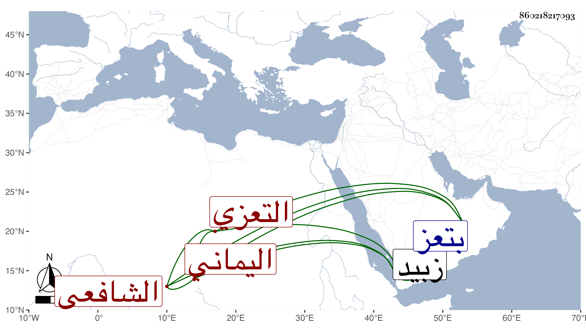

0902Sakhawi.DawLamic.ITO20230111-ara1.EIS1600.860218217093
Biography ID: 860218217093
414
الحسن بن عبد الرحمن البدر التعزي اليماني الشافعي بن الصباحي . كان أبوه أو عمه وزيرا للمسعود من بني رسول فنشأ هذا طالب علم وأخذ عن الفقهاء عمر الفتي ويوسف المقرىء وغيرهما بزبيد وغيرها ، وتميز في الفقه والفرائض والحساب والجبر والمقابلة بحيث كان مدار الفتيا بتعز عليه ، وولى تدريس زيادة عبد الوهاب بن طاهر بالجامع المظفري وانتفع به حتى مات في تاسع عشر شوال سنة ثمان وتسعين بتعز وقد جاز الكهولة ، وله نظم رائق كل ذلك فيما بلغني رحمه الله .
